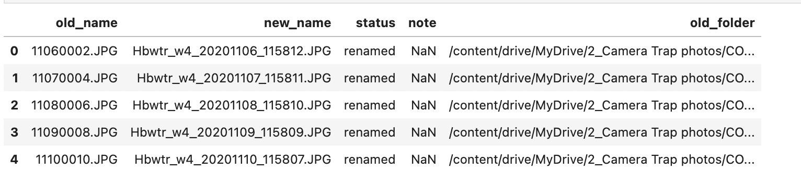

Chapter 2 Rename Raw Images
Renaming images is the first key step in this data processing pipeline. For our study, field camera traps in various watersheds at Hubbard Brook Experimental Forest took one photo each day over a time span of several years. The original file names were a non-descriptive series of numbers, following this step, they will contain information about the watershed the photo was taken at as well as time-series image metadata.
These steps were designed to process files stored in a shared Google Drive by running the script in Google Colaboratory. Before renaming images contained in a local directory, a few modifications to the script will need to be made; however, the same general principles will still apply. For instructions on running the script on files on your local computer rather than in Google Drive, see Section 1.2.
2.1 Google Drive Files
2.1.1 Load Packages
Before each session, first run the top 3 lines – these lines of code install the Tesseract Optical Character Recognition Engine, which allows us to later use the text_to_string function and read the timestamp from each image. Subsequently, load all required packages/libraries.
apt install tesseract-ocr
apt install libtesseract-dev
pip install pytesseract
import numpy as np
import pandas as pd
import re
import os
import shutil
from google.colab import drive
from glob import glob2.1.2 Mount Google Drive
# This will connect to your Google Drive. It will ask you to allow access
drive.mount('/content/drive', force_remount=True)When using Google Colaboratory, before performing any file operations, you must mount your personal Google Drive. Find the code chunk with the above code in Colab and run it to allow access.
Afterwards, make sure all file paths used in any functions are for your Google Drive specifically. To find a pathname, click the orange file icon on Google Colab’s sidebar, and then click content to navigate your Google Drive. Right-click and select copy path to copy the pathname (see below).

2.1.3 Copying Files
This preliminary step is used when a backup or copy of the original data is needed. It will copy all files in the source directory not present in the target directory.
This method uses shutil’s copytree function, which blanket copies all files within a specified directory. To handle issues caused by direct copying of files versus copying of subdirectories, these are copied separate from each other within the code.
if missing_files == source_file_list: # Will copy entire source folder into destination when no subfolders/files are shared between the two
shutil.copytree(source, destination + '/' + directory_name, ignore = shutil.ignore_patterns('*.gdoc', '*.gsheet', '*.gslides')) #1
else:
for folder in missing_files: # Will copy all missing files/subfolders not present in the destination
new_dst = destination + '/' + folder
if os.path.isfile(folder) == False: # Copies all subfolders/subdirectories
shutil.copytree(source + '/' + folder, new_dst, ignore = shutil.ignore_patterns('*.gdoc', '*.gsheet', '*.gslides')) #1
missing_files.remove(folder)
else: # Copies files not contained within a subdirectory
shutil.copy(source + '/' + folder, destination)
missing_files.remove(folder)
print("These folders/files were not copied (ignore if list is empty): ")
print(missing_files)Copying any Google files, be it Google Docs, Slides, Sheets, Drawings, etc. must be done manually as these files are special and not able to be copied using shutil1. For any additional file extensions to avoid copying, specify them as arguments for shutil.ignore_patterns.
2.1.3.1 Main Method
Finally, to copy the files, simply call copy_files within the main method. This method takes 3 arguments – the file path for the source folder, the file path for the destination folder, and a folder name for the folder created if the source and destination directories share no files.
args = ("/content/drive/MyDrive/Duke 2022-2023/Data+/2_Camera Trap photos/Stream Photos/On_Deck", "/content/drive/MyDrive/Duke 2022-2023/Data+/2_Camera Trap photos/COPY of data for script/On_Deck", "Newly_uploaded_data")
copy_files(*args)2.1.4 Renaming Files
The renaming files script takes advantage of the Tesseract OCR Engine to read the time stamp on the image. This string is then parsed to generate time series information. There are many complementary methods in this script; for more information, see documentation within the script itself.
Be sure to allocate time for the script to run, especially on folders containing large amounts of image files2
The pixel parameters within extract_timeStamp are designed for the images taken by the Bushnell field cameras used in our study.
def extract_timeStamp(pic_address):
'''
Extract time Stamp from picture file.
From the bottom right of each picture file, the time stamp is read as image using cv2. It is then converted to a string.
text which is then checked for format and subsequently returned through match_date_format.
Parameters
----------
pic_address : full source address of current picture file.
Returns
-------
match_date_format.group(0) : unaltered timeStamp from bottom of the photo as a string.
'''
# print(pic_address)
img = cv2.imread(pic_address) #read as an image
# check if the timestamp is the correct format
date_pattern = "\d\d-\d\d-\d\d\d\d \d\d:\d\d:\d\d" # eg 12-12-2020 11:59:32
loop = 1
size_extension=0
x,y,z = np.shape(img)
x = (x//1000)*1000
y = (y//1000)*1000
# print(x,y,z)
while loop>0:
ts = img[2352 - size_extension:, 2000-size_extension:, :] #(change if sizing conventions change!)
text = pytesseract.image_to_string(ts)
match_date_format = re.search(date_pattern,text)
if match_date_format:
# found timestamp, return
break
ts_2 = img[x - size_extension:, x-size_extension:, :] #(change if sizing conventions change!)
text_2= pytesseract.image_to_string(ts_2)
match_date_format = re.search(date_pattern,text_2)
if match_date_format:
# found timestamp, return
break
size_extension+=100
loop-=1
if loop ==0:
# reached end of loop without finding correct timestamp
print("Correct timestamp not found")
else:
return match_date_format.group(0)As with before, make sure Google Drive is mounted, and all relevant packages/libraries are imported. Then, update the file paths3 and run the main method (below).
from glob import glob
#collect all folder paths from newly uploaded data on folder
folder_list = glob("/content/drive/MyDrive/2_Camera Trap photos/COPY of data for script/Newly_uploaded_data/*/", recursive = True)
# collect all folder path from on deck folder
folder_list.extend(glob("/content/drive/MyDrive/2_Camera Trap photos/COPY of data for script/On_Deck/*/", recursive = True))
# extract folder_name
folder_list = [f[:-1] for f in folder_list]
i = 0
file_df = pd.read_csv("/content/drive/MyDrive/2_Camera Trap photos/COPY of data for script/Testing destination/file_df.csv")
# for each folder rename and add them to the new destination - dst
for folder in folder_list:
print(i,"/", len(folder_list))
i+=1
# destination to save labeled images
dst = "/content/drive/MyDrive/2_Camera Trap photos/project_dir/labeled_image_files"
save_as_zip = False
#will unzip if necessary
folder, unzipped = unzip_src(folder)
# #create new destination folder
fdr_name, fdr_dst = new_folder(folder, dst)
if os.path.exists(fdr_dst):
print("path already exists")
else:
print("new path")
os.mkdir(fdr_dst)
print(folder)
print(fdr_name)
print(fdr_dst)
rename_images(folder, fdr_name, fdr_dst, file_df = file_df)The script generates a pandas dataframe which contains the old filename,
new filename, folder name containing the image, as well as the image status (whether or not it was renamed successfully). This dataframe is then exported to a .csv file in a user-specified destination. See below for an example.
file_df = pd.DataFrame(file_names_list, columns = ["old_name", "new_name","status", "note","old_folder"])
file_df.to_csv(dst+"/"+"file_df.csv")
file_df.head()
2.1.4.1 Manual Renames
While this script works for the vast majority of images, occasionally some images will fail to rename correctly. For any files where the timestamp generated a file name which does not match a valid date, run the below chunk of code to identify them.
# Load in created csv, returns file name and path if extracted timestamp is not in range
file_df = pd.read_csv("/content/drive/MyDrive/2_Camera Trap photos/project_dir/labeled_image_files/file_df.csv")
file_df = file_df[file_df["new_name"].notnull()]
for index, row in file_df.iterrows():
#Check month range
if int(row["new_name"][13:15]) > 12 or int(row["new_name"][13:15]) < 0:
print(row["new_name"]+" Month not in range, check name in folder :"+row["old_folder"])
#Check year range
if int(row["new_name"][9:13]) > 2022 or int(row["new_name"][9:13]) < 2018:
print(row["new_name"]+" Year not in range, check name in folder :"+row["old_folder"])
#Check day range
if int(row["new_name"][15:17]) > 31 or int(row["new_name"][15:17]) < 0:
print(row["new_name"]+" Day not in range, check name in folder :"+row["old_folder"])Another common occurrence is when the timestamp failed to generate altogether due
to pytesseract.image_to_string failing. This is sometimes unavoidable and requires manual renaming of the file. However, this should not be a frequent occurrence due to the built-in loop in extract_timeStamp.
2.2 Local Files
This section covers how to run the copy_files method and rename_script script
on files contained in a local directory. This is especially relevant for users
aiming to rename images that are not from Hubbard Brook experimental forest, and/or
do not meet the specifications of our script (i.e the timestamp is located at a
different position on the image, or )
2.2.1 Load Packages
When using files on your local computer, first install pytesseract - documentation
and more information on how to do this is available here. Then, load all packages as needed.
import pytesseract
import numpy as np
import pandas as pd
import re
import os
import shutil
from glob import glob2.2.2 Copying Files
The shutil and os libraries can be used in the same manner on a local machine
as in Google Drive. Therefore, no modifications are required to run the copy_files method on local files on your computer. Refer to the instructions above in section 1.1.3. Ensure the path arguments in the main method map to directories stored in your local machine.
2.2.3 Renaming Files
The script for renaming files is designed with Hubbard Brook images in mind. The format for an image’s new name is Hbwtr_watershed number_date_time.JPG. The date and time elements are extracted from the image, whereas the watershed number is part of the name of the source directory.
If you would like to follow a different naming convention, the below method must be
changed (generate_picName) to reflect that. For example, changing new_name to "Watershed"ws_num +'_' + date + .'jpg'" would output Watershed9_12042020.jpg for an image taken on December 4th, 2020 at Watershed no. 9.
def generate_picName(fdr_name, tStamp):
ws_num = fdr_name[1] #!!!this should be changed if src_elements[-2][1] will not be watershed number!!
stamp_elements = re.split('[\n: -]', tStamp)
date = stamp_elements[2] + stamp_elements[0] + stamp_elements[1]
time = stamp_elements[3] + stamp_elements[4] + stamp_elements[5]
new_name = "Hbwtr_w" + ws_num + '_' + date + '_' + time + '.JPG'
return new_name2.2.3.1 Changing Timestamp
The most complicated and error-prone step in the renaming process is extracting a timestamp. The way it is done in the current code is by starting with the pixel location of the timestamp, attempting to read the timestamp with image_to_string, and zooming out if the timestamp
loop = 1
size_extension=0
x,y,z = np.shape(img)
x = (x//1000)*1000
y = (y//1000)*1000
# print(x,y,z)
while loop>0:
ts = img[2352 - size_extension:, 2000-size_extension:, :] #(change if sizing conventions change!)
text = pytesseract.image_to_string(ts)
match_date_format = re.search(date_pattern,text)
if match_date_format:
# found timestamp, return
break
ts_2 = img[x - size_extension:, x-size_extension:, :] #(change if sizing conventions change!)
text_2= pytesseract.image_to_string(ts_2)
match_date_format = re.search(date_pattern,text_2)
if match_date_format:
# found timestamp, return
break
size_extension+=100
loop-=1
if loop ==0:
# reached end of loop without finding correct timestamp
print("Correct timestamp not found")Our script is only able to extract the timestamp if it is present within the image.
If the image you use does not contain any time-series data, we recommend removing the extract_timeStamp method and changing the file naming format to reflect that.
After these changes are made, the script should again function identically to the one housed in Google Colab. Update the file path and run the main method to rename your files.
The script will occasionally throw some unavoidable errors, such as the image_to_string method failing to extract a timestamp. To deal
with these fringe cases, see section 1.1.4.1 (Manual Renames) above.
For more information, see the comments within the script and text blocks in the Jupyter Notebook.↩︎
If you are looking to reduce the script’s runtime, one method is to remove the loop within
extract_timeStampwhich searches multiple times for the correct timestamp if it is not found initially. However, this will increase the number of files which failed to be renamed correctly.↩︎It may be a good idea to remove or make a note of any non-image files within the folder, as these will throw errors.↩︎